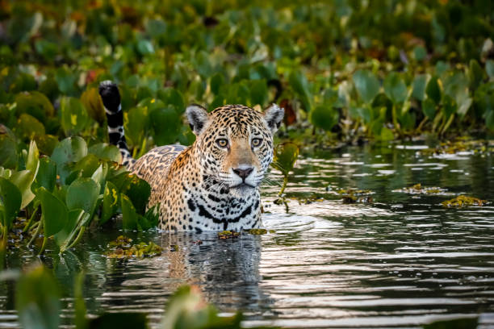

Animal 01
A onça-pintada é o maior felino das Américas. Forte, ágil e boa nadadora, tem pelagem amarela com manchas escuras e vive em florestas e áreas alagadas como o Pantanal e a Amazônia.
Saiba mais...A onça-pintada é o maior felino das Américas. Forte, ágil e boa nadadora, tem pelagem amarela com manchas escuras e vive em florestas e áreas alagadas como o Pantanal e a Amazônia.
Saiba mais...A arara-azul é uma grande ave de plumagem azul intensa. Vive em áreas como o Pantanal e a Amazônia, alimentando-se de frutos e sementes. É símbolo da fauna brasileira e está ameaçada de extinção.
Saiba mais...O tucano é uma ave tropical conhecida pelo grande bico colorido. Vive em florestas e se alimenta de frutas, ajudando a espalhar sementes. É um dos símbolos mais conhecidos da fauna brasileira.
Saiba mais...